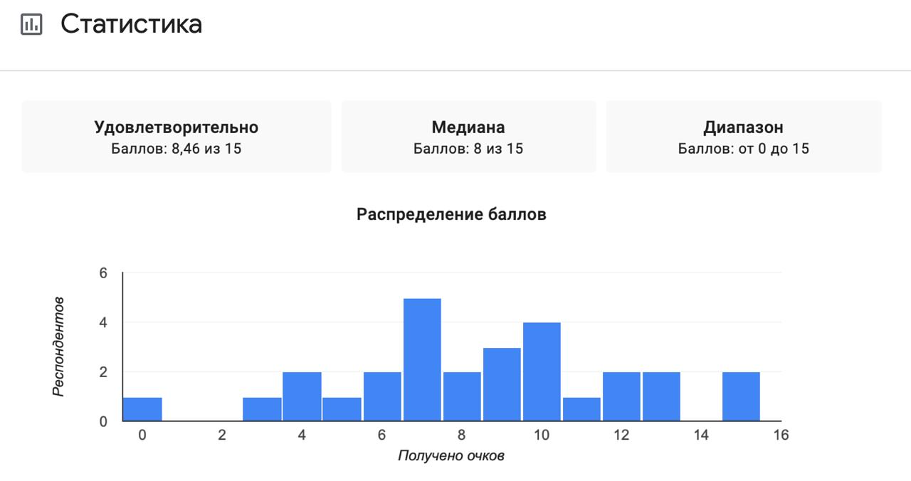
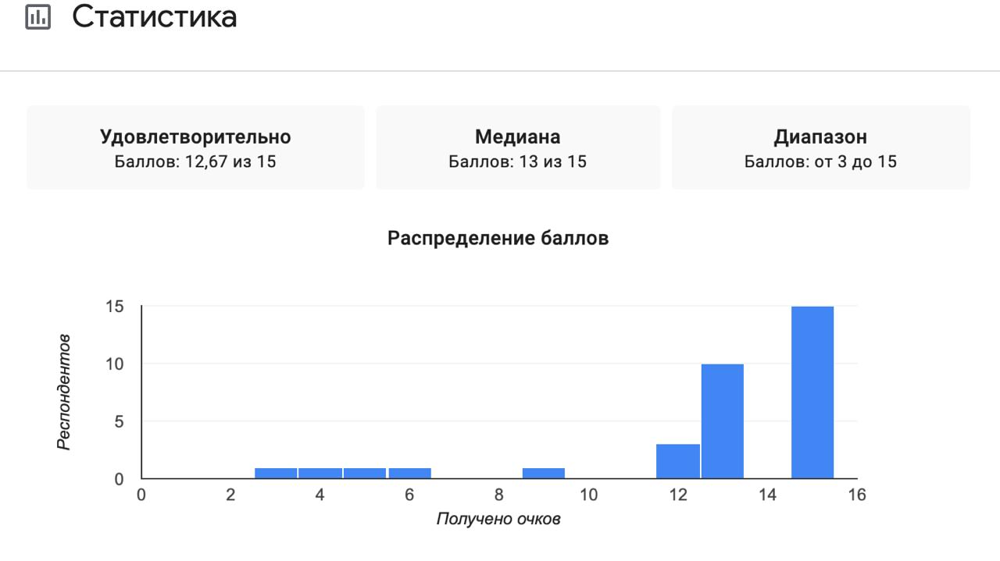

Статистика
Ниже представлена статистика учеников, прошедших тест до начала обучения на платформе.

Рисунок: результаты входного тестирования до прохождения уроков.
Статистика после обучения
Ниже показаны результаты учеников после прохождения обучающих уроков на платформе.

Рисунок: распределение баллов после завершения курса и самопроверки.
Анализ проделанной работы: влияние обучения на учеников
- После прохождения курса распределение результатов заметно сместилось вправо: стало больше высоких баллов и меньше низких.
- Медианный результат вырос до 13 из 15, что означает улучшение уровня большинства учеников, а не только отдельных сильных участников.
- Средний балл также повысился, что подтверждает общий положительный эффект от последовательной работы с заданиями.
- Ученики стали увереннее работать с неологизмами в контексте, лучше распознают словообразовательные модели и точнее используют новые слова в предложениях.
- Формат самопроверки (эталонные ответы + самооценка) помог сделать обучение осознанным: школьники видят свои слабые места и быстрее закрепляют материал.